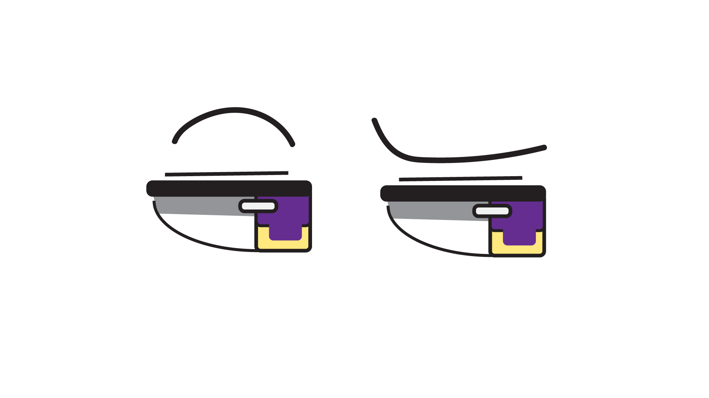

Blink
Cut Up Cinema

The animation project developed out of a mix of experimentation, adaptation, and compromise between my usual drawing process and the constraints of new software. Coming from a background in digital drawing, I immediately felt how different Adobe Illustrator and Photoshop were from the programs I rely on. Their tools didn’t move the way my hand expected them to, and many steps felt unintuitive compared to my normal workflow. These early struggles shaped the direction of the animations, pushing me to simplify my ideas and approach the project with patience rather than speed. For the first GIF, I chose to focus on something small and familiar: an eye blink. Keeping the motion minimal allowed me to maintain my drawing style while still learning the technical aspects of frame-by-frame animation in Photoshop. The blinking cycle—open, close, and open again—became a controlled exercise in timing and consistency. What initially felt like a limitation ended up grounding the animation, letting me focus on line quality and subtle movement instead of overwhelming myself with complexity. The second GIF took a different path, becoming more playful and collaborative. My younger sister joined as the “puppet” for the cutout-style animation, and introducing her gestures—specifically a cheerful wave dance—made the project feel more alive. Creating the moving background elements helped reinforce the sense of motion, even as I continued learning how to manage layers and cutout shapes effectively. Working with her added a personal dimension that softened the frustrations of the software and reminded me that animation can be fun, even when the process is unfamiliar. Together, these two GIFs trace a progression from hesitation to experimentation. The final animations reflect not just the imagery on screen, but the incremental learning, adjustments, and moments of surprise that made the project possible.
Back to Home